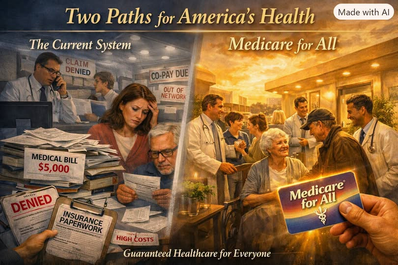

Article #100
The True Cost of the Current U.S. Healthcare System — And How It Compares to Medicare for All

Download Word document (.docx)
The United States spends more on healthcare than any nation in history, yet delivers outcomes that consistently fall behind other developed countries. To understand what Medicare for All would change, we have to look beyond premiums and copays. The true cost of our current system is financial, structural, economic, and moral — and those costs compound every year.
Medicare for All is not just a different payment model. It is a fundamentally different architecture for how care is delivered, financed, and accessed. Below is a detailed comparison of the two systems.
1. Financial Cost: What We Pay Today vs. Under Medicare for All
The Current System
The U.S. spends roughly $4.8 trillion per year on healthcare — about 18% of GDP, nearly double the spending of peer nations. But the money doesn’t go where people think.
Where the dollars actually flow:
- Administrative waste: Up to 25–30% of all healthcare spending goes to billing departments, insurance paperwork, coding, claims disputes, and compliance.
- Private insurance overhead: Marketing, profits, executive salaries, shareholder dividends.
- Drug pricing: Americans pay 2–3× more for the same medications compared to other countries.
- Hospital pricing games: Negotiated rates, facility fees, surprise billing, and opaque charge structures.
- Fragmented systems: Every insurer has different rules, networks, and reimbursement models — multiplying complexity.
The result: the world’s most expensive system delivers mediocre outcomes.
Medicare for All
Medicare for All consolidates financing into a single public system. Hospitals, clinics, and doctors remain independent — but billing becomes simple, standardized, and universal.
Financial impacts:
- Administrative waste drops dramatically — from ~30% to ~5–10%.
- Drug prices fall through national negotiation.
- No premiums, deductibles, copays, or surprise bills.
- Employers no longer pay for insurance, freeing billions for wages and hiring.
- Families save thousands per year in out-of-pocket costs.
Multiple independent analyses (Urban Institute, Lancet, Yale) have found that Medicare for All would cost less overall than the current system, even while covering everyone.
2. Human Cost: What People Experience Today vs. Under Medicare for All
The Current System
The human cost is staggering:
- Over 100 million Americans carry medical debt.
- People ration insulin, skip doctor visits, or delay care due to cost.
- Insurance is tied to employment — lose your job, lose your coverage.
- Mental health access is fragmented and often out of network.
- Families face bankruptcy from a single illness.
The system creates fear, not security.
Medicare for All
Medicare for All eliminates financial barriers:
- Everyone is covered, permanently.
- No networks, no denials, no “out-of-network” traps.
- Mental health and primary care become universally accessible.
- Preventive care becomes routine, reducing long-term suffering.
- Medical debt disappears.
The human experience shifts from stress and scarcity to stability and dignity.
3. Economic Cost: What the System Does to Workers and Businesses
The Current System
Healthcare acts as a hidden tax on every employer and employee:
- Employers pay enormous premiums, reducing wages and hiring.
- Small businesses struggle to compete with large firms that negotiate better rates.
- Workers stay in jobs they dislike (“job lock”) because they fear losing insurance.
- Families divert income from savings, education, and housing to medical bills.
The system suppresses entrepreneurship, mobility, and innovation.
Medicare for All
Medicare for All removes healthcare from employment entirely:
- Employers no longer fund insurance — freeing capital for wages, hiring, and growth.
- Workers can change jobs, start businesses, or retire early without losing coverage.
- Small businesses gain equal footing with large corporations.
- Families regain thousands per year in disposable income.
The economy becomes more flexible, competitive, and humane.
4. Structural Cost: How the System Is Built — and Why It Fails
The Current System
The U.S. healthcare system is not one system — it is hundreds of mini-systems:
- Thousands of insurance plans
- Different networks, formularies, and reimbursement rules
- Competing billing codes
- Fragmented electronic health records
- Redundant administrative layers
This fragmentation creates:
Inefficiency
Errors
Delays
Waste
Higher costs
Lower quality
Medicare for All
Medicare for All replaces fragmentation with one universal financing system:
- One set of rules
- One network
- One billing structure
- One drug formulary
- One electronic health record standard
Providers spend time on care, not paperwork.
Patients navigate a simple, unified system.
5. Moral Cost: What It Means for a Society
The Current System
The deepest cost is ethical:
- People die because they cannot afford care.
- Illness becomes a financial catastrophe.
- Healthcare is treated as a commodity, not a human right.
- Trust in institutions erodes.
- Compassion becomes conditional.
Medicare for All
Medicare for All reframes healthcare as a public good:
- Every person is valued equally.
- No one is denied care due to income.
- Society invests in wellness, not just treatment.
- The system aligns with moral principles of fairness and dignity.
It is not just a policy — it is a statement about what a nation believes.
Conclusion: Two Systems, Two Philosophies
The current U.S. healthcare system is built on complexity, profit, and fragmentation.
Medicare for All is built on simplicity, universality, and care.
One system treats illness as a market opportunity.
The other treats health as a shared human right.
The true cost of the current system is not just measured in dollars — it is measured in lost potential, broken families, suppressed wages, preventable deaths, and moral injury.
Medicare for All is not perfect, but it directly addresses the structural failures that make American healthcare the most expensive and least efficient in the developed world.